SQL
Misc
Resources
Publicly Available SQL Databases: Need to email administrator to gain access
ChatSQL: Convert plain text to MySQL query by ChatGPT
dplyr::show_querycan convert a dplyr expression to SQL for db object (e.g. dbplyr, duckdb, arrow)Queries in examples
- Window Functions
- Average Salary by Job Title
- Average Unit Price for each CustomerId
- Rank customers by amount spent
- Create a new column that ranks Unit Price in descending order for each CustomerId
- Create a new column that provides the previous order date’s Quantity for each ProductId
- Create a new column that provides the very first Quantity ever ordered for each ProductId
- Calculate a cumulative moving average UnitPrice for each CustomerId
- Rank customers for each department by amount spent
- Find the model and year of the car that been on the lot the longest
- Create a subset (CTE)
- Calculate a running monthly total (aka cumsum)
- Also running average
- Calculate a running monthly total for each account id
- Calculate a 3 months rolling running total using a window that includes the current month.
- Calculate a 7 months rolling running total using a window where the current month is always the middle month
- Calculate the number of consecutive days spent in each country
- Calculate a running monthly total (aka cumsum)
- CTE
- Average monthly cost per campaign for the company’s marketing efforts
- Count the number of interactions of new users
- The average top Math test score for students in California
- Business Queries
- 7-day Simple Moving Average (SMA)
- Rank product categories by shipping cost for each shipping address
- Daily counts of open jobs (where “open” is an untracked daily status)
- Get the latest order from each customer
- Window Functions
Order of Operations
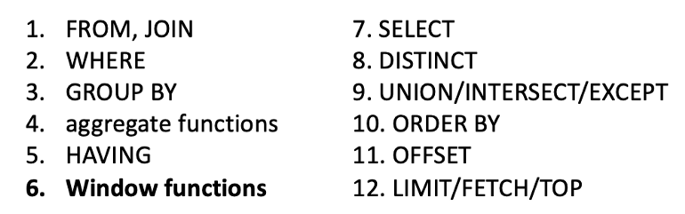- Higher ranked functions can be inserted inside lower ranked functions
- e.g a window function can be inside a SELECT function but not inside a WHERE clause
- There are exceptions and hacks around this in some cases
- Higher ranked functions can be inserted inside lower ranked functions
Types of Commands
- Data Query Language (DQL) - used to find and view data without making any permanent changes to the database.
- Data Manipulation Language (DML) - used to make permanent changes to the data, such as updating values or deleting them.
- Data Definition Language (DDL) - used to make permanent changes to the table, such as creating or deleting a table.
- Data Control Language (DCL) - used for administrative commands, such as adding or removing users of different tables and databases.
- Transact Control Language (TCL) - advanced SQL that deals with transaction level statements.
Microsoft SQL Server format for referencing a table:
[database].[schema].[tablename]
Alternative
USE my_data_base GO
Check if a table is updatable
SELECT table_name, is_updatable FROM information_schema.viewsUseful if some of the tables you are working with are missing values that you need to add
If not updatable, then you’ll need to contact the database administrator to request permission to update that specific table
Show all tables
SHOW FULL TABLES -- mysql
Set-up
- postgres
- Download postgres
- pgAdmin is an IDE commonly used with postgres
- Open pgAdmin and click on “Add new server.”
- Sets up connection to existing server so make sure postgres is installed beforehand
- Create Tables
- home >> Databases (1) >> postgres >> Query Tool
- If needed, give permission to pgAdmin to access data from a folder
- Might be necessary to upload csv files
- Import csv file
- right-click the table name >> Import/Export
- Options tab
- Select import, add file path to File Name, choose csv for format, select Yes for Header, add , for Delimiter
- Columns tab
- uncheck columns not in the csv (probably the primary key)
- Wonder if NULLs will be automatically inserted for columns in the table that aren’t in the file.
- uncheck columns not in the csv (probably the primary key)
- Open pgAdmin and click on “Add new server.”
Terms
- Batch - a set of sql statements e.g. statements between BEGIN and END
- Compiled object - you can create a function written in C/C++ and load into the database (at least in postgres) to achieve high performance.
- Correlated Columns - tells how good the match between logical and physical ordering is.
- Correlated/Uncorrelated Subqueries
correlated- a type of query, where inner query depends upon the outcome of the outer query in order to perform its execution
- A correlated subquery can be thought of as a filter on the table that it refers to, as if the subquery were evaluated on each row of the table in the outer query
- A correlated subquery can be thought of as a filter on the table that it refers to, as if the subquery were evaluated on each row of the table in the outer query
uncorrelated - a type of sub-query where inner query doesn’t depend upon the outer query for its execution.
- It is an independent query, the results of which are returned to and used by the outer query once (not per row).
-- Uncorrelated subquery: -- inner query, c1, only depends on table2 select c1, c2 from table1 where c1 = (select max(x) from table2); -- Correlated subquery: -- inner query, c1, depends on table1 and table2 select c1, c2 from table1 where c1 = (select x from table2 where y = table1.c2);
- Functions execute at a different level of priority and are handled differently than Views. You will likely see better performance.
- Index - a quick lookup table (e.g. field or set of fields) for finding records users need to search frequently. An index is small, fast, and optimized for quick lookups. It is very useful for connecting the relational tables and searching large tables. (also see DB, Engineering >> Cost Optimizations)
- Migrations (schema) - version control system for your database schema. Management of incremental, reversible changes and version control to relational database schemas. A schema migration is performed on a database whenever it is necessary to update or revert that database’s schema to some newer or older version.
- Physical Ordering - A PostgreSQL table consists of one or more files of 8KB blocks (or “pages”). The order in which the rows are stored in the file is the physical ordering.
- Predicate - defines a logical condition being applied to rows in a table. (e.g. IN, EXISTS, BETWEEEN, LIKE, ALL, ANY)
- Scalar/Non-Scalar Subqueries
- A scalar subquery returns a single value (one column of one row). If no rows qualify to be returned, the subquery returns NULL.
- A non-scalar subquery returns 0, 1, or multiple rows, each of which may contain 1 or multiple columns. For each column, if there is no value to return, the subquery returns NULL. If no rows qualify to be returned, the subquery returns 0 rows (not NULLs).
- Selectivity - the fraction of rows in a table or partition that is chosen by the predicate
- Refers to the quality of a filter in its ability to reduce the number of rows that will need to be examined and ultimately returned
- With a high selectivity, using the primary key or indexes to get right to the rows of interest
- With a low selectivity, a full table scan would likely be needed to get the rows of interest.
- Higher selectivity means: more unique data; fewer duplicates; fewer number of rows for each key value
- Used to estimate the cost of a particular access method; it is also used to determine the optimal join order. A poor choice of join order by the optimizer could result in a very expensive execution plan.
- Refers to the quality of a filter in its ability to reduce the number of rows that will need to be examined and ultimately returned
- Soft-deleted - An operation in which a flag is used to mark data as unusable, without erasing the data itself from the database
- Surrogate key - very similar to a primary key in that it is a unique value for an object in a table. However, rather than being derived from actual data present in the table, it is a field generated by the object itself. It has no business value like a primary key does, but is rather only used for data analysis purposes. Can be generated using different columns that already exist in your table or more often from two or more tables. dbt function definition
- Examples: PostgreSQL serial column, Oracle sequence column, or MySQL auto_increment column, Snowflake _file + _line columns
- Example: Each employee id is concatenated with a department id (e.g. marketing or finance)
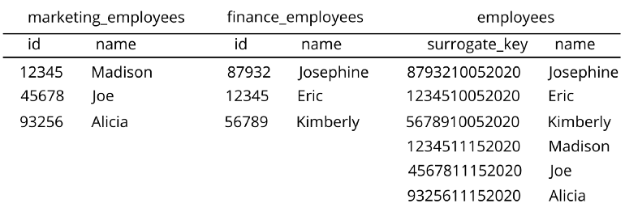
- Transaction - a set of queries tied together such that if one query fails, the entire set of queries are rolled back to a pre-query state if the situation dictates.
- A database transaction, by definition, must be atomic, consistent, isolated and durable. These are popularly known as ACID properties. These properties can ensure the concurrent execution of multiple transactions without conflict.
- Views - database objects that represent saved SELECT queries in “virtual” tables.
- Contains a query plan. For each query executed, the planner has to evaluate what’s being asked and calculate an optimal path. Views already have this plan calculated so it allows subsequent queries to be returned with almost no friction in processing aside from data retrieval.
- Some views are updateable but under certain conditions (1-1 mapping of rows in view to underlying table, no group_by, etc.)
Basics
Create Tables
If you don’t include the schema as part of the table name (e.g. schema_name.table_name), pgadmin automatically places it into the “public” schema directory
Field Syntax: name, data type, constraints
Example: Create table as select (CTAS)
CREATE TABLE new_table AS SELECT * FROM old_table WHERE condition;Example: Table 1 (w/primary key)
DROP TABLE IF EXISTS classrooms CASCADE; CREATE TABLE classrooms ( id INT PRIMARY KEY GENERATED ALWAYS AS IDENTITY, teacher VARCHAR(100) ); -- OR CREATE TABLE classrooms ( id INT GENERATED ALWAYS AS IDENTITY, teacher VARCHAR(100) PRIMARY KEY(id) );“classrooms” is the name of the table; “id” and “teacher” are the fields
CASCADE- postgres won’t delete the table if other tables point to it, so cascade will override measure.GENERATED ALWAYS AS IDENTITY- makes it so you don’t have to keep track of which “id” values have been used when adding rows. You can ommit the value for “id” and just add the values for the other fieldsSee tutorial for options, usage, removing, adding, etc. this constraint
INSERT INTO classrooms (teacher) VALUES ('Mary'), ('Jonah');- Also see Add Data >> Example: chatGPT
Example: Table 2 (w/foreign key)
DROP TABLE IF EXISTS students CASCADE; CREATE TABLE students ( id INT PRIMARY KEY GENERATED ALWAYS AS IDENTITY, name VARCHAR(100), classroom_id INT, CONSTRAINT fk_classrooms FOREIGN KEY(classroom_id) REFERENCES classrooms(id) );- “students” is the name of the table; “id”, “name”, and “classroom_id” are the fields
- Create a foreign key that points to the “classrooms” table
Expression
- fk_classrooms is the name of the
CONSTRAINT - “classroom_id” is the field that will be the
FOREIGN KEY REFERENCESpoints the foreign key to the classrooms table’s primary key, “id”- foreign keys can point to any table
- fk_classrooms is the name of the
Postgres won’t allow you to insert a row into students with a “classroom_id” that doesn’t exist in the “id” field of classrooms but will allow you to use a NULL placeholder
-- Explicitly specify NULL INSERT INTO students (name, classroom_id) VALUES ('Dina', NULL); -- Implicitly specify NULL INSERT INTO students (name) VALUES ('Evan');- Also see Add Data >> Example: chatGPT
Example
CREATE TABLE members ( id serial primary key, second_name character varying(200) NOT NULL, date_joined date NOT NULL DEFAULT current_date, member_id integer references members(id), booking_start_time timestamp without timezone NOT NULL- The “serial” data type does the same thing as
GENERATED ALWAYS AS IDENTITY(see first example), but is NOT compliant with the SQL standard. UseGENERATED ALWAYS AS IDENTITY - “references” seems to be another old way to create foreign keys (see 2nd example for proper way)
- “character varying” - variable-length with limit (e.g limit of 200 characters)
- character(n), char(n) are for fixed character lengths; text is for unlimited character lengths
- “current_date” is a function that will insert the current date as a value
- “timestamp without timezone” is literally that
- also available: time with/without timezone, date, interval (see Docs for details)
- The “serial” data type does the same thing as
Add Data
Example: Copy/Paste table values into chatGPT to get the query
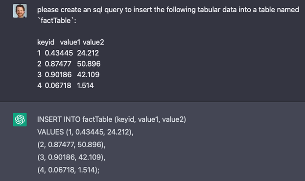Example: Add data via .csv
COPY assignments(category, name, due_date, weight) FROM 'C:/Users/mgsosna/Desktop/db_data/assignments.csv' DELIMITER ',' CSV HEADER;- “assignments” is the table; “category”, “name”, “due_date”, “weight” are fields that you want to import from the csv file
- ** The order of the columns must be the same as the ones in the CSV file **
HEADERkeyword to indicate that the CSV file contains a header- Might need to have superuser access in order to execute the COPY statement successfully
Subqueries
**Better to used CTEs instead of subqueries**
- Subqueries make it difficult to understand their context in the larger query
- The only way to debug a subquery is by turning it into a CTE or pulling it out of the query entirely.
- CTEs and subqueries have a similar runtime, but subqueries make your code more complex for no reason.
Notes from How to Use SubQueries in SQL
- Also shows the alt method of creating a temporary table to compute the queries
Use cases
- Filtering rows from a table with the context of another.
- Performing double-layer aggregations such as average of averages or an average of sums.
- Accessing aggregations with a subquery.
Tables used in examples
- Store A (store_a)
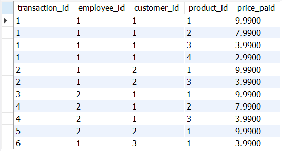- Store B is similar
- Store A (store_a)
Example: Filtering rows
select * from sandbox.store_b where product_id IN ( select product_id from sandbox.store_b group by product_id having count(product_id) >= 3 );- filters the rows with products that have been bought at least three times in store_b
Example: Multi-Layer Aggregation
select avg(average_price.total_value) as average_transaction from ( select transaction_id, sum(price_paid) as total_value from sandbox.store_a group by transaction_id ) as average_price ;- computes the average of all transactions
- can’t apply an average directly, as our table is oriented to product_ids and not to transaction_ids
Example: Filtering the table based on an Aggregation
select @avg_transaction:= avg(agg_table.total_value) from ( select transaction_id, sum(price_paid) as total_value from sandbox.store_a group by transaction_id ) as agg_table; select * from sandbox.store_a where transaction_id in ( select transaction_id from sandbox.store_a group by transaction_id having sum(price_paid) > @avg_transaction )- filters transactions that have a value higher than the average (where the output must retain the original product-oriented row)
Joins
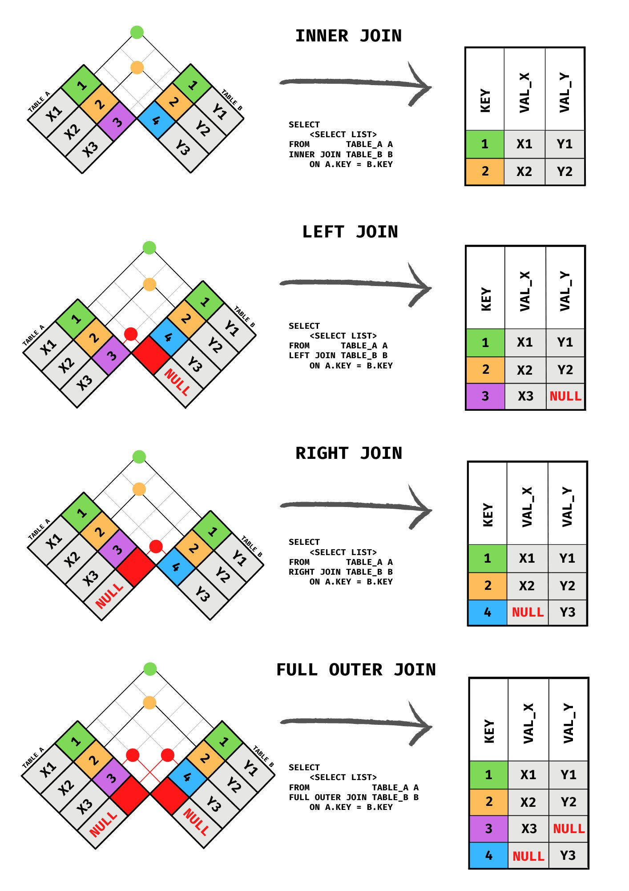
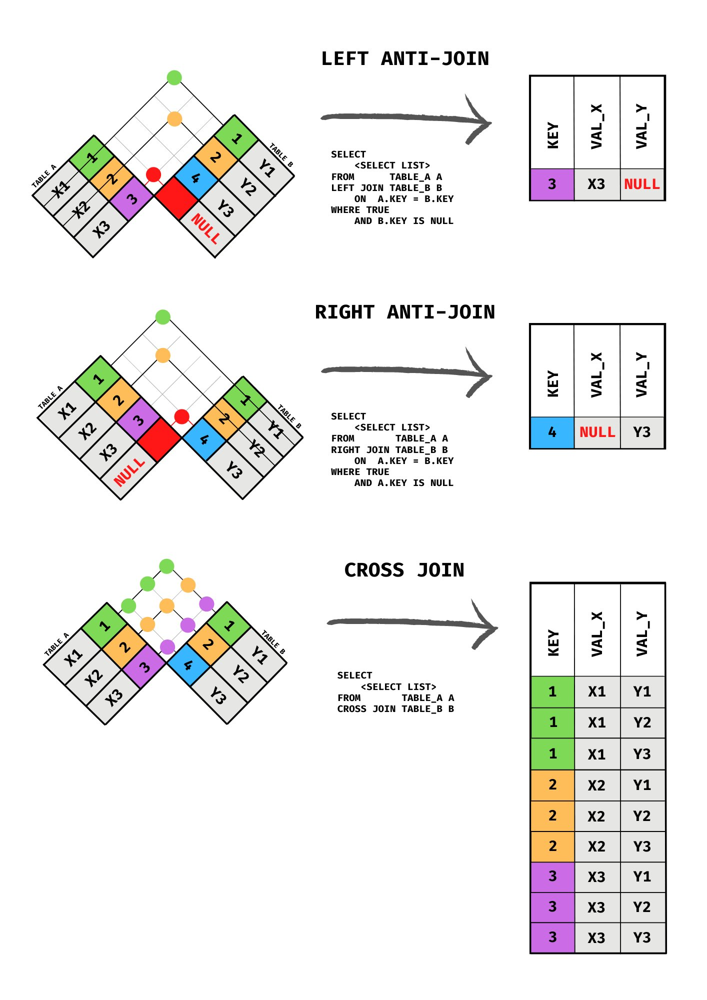
Cross Join - acts like an expand_grid; where each value in the join key column gets all combinations of rows in both tables (also see above pic)
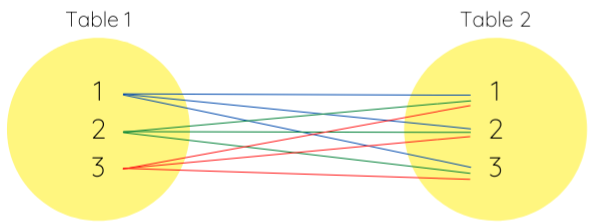Efficient join
When you add the
whereclause, the cross join acts similarly to aninner join, except you aren’t joining it on any specified columnExample:
SELECT schedule.event, calendar.number_of_days FROM schedule CROSS JOIN calendar WHERE schedule.total_number < calendar.number_of_days- Only join the row in the “schedule” table with the rows in the “calendar” table that meet the specified condition
Natural Join - don’t need to specify join columns; need to have two columns in each table with the same name
- Use cases
- There are a lot of common columns with the same name across multiple tables
- They will all be used as joining keys.
- You don’t want to type out all of the common columns in select just to avoid outputting the same columns multiple times.
- There are a lot of common columns with the same name across multiple tables
select * from table_a natural join table_b ; -- natural + outer select * from table_a natural outer join table_b ;- Use cases
R
Get query from dplyr code
tbl_to_sql <- function(tbl) { dplyr::show_query(tbl) |> capture.output() |> purrr::discard_at(1) |> paste(collapse = " ") }Transforms query into a string
Connect to or Create a SQLite database
con <- DBI::dbConnect(drv = RSQLite::SQLite(), here::here("db_name.db"), timeout = 10)Connect to Microsoft SQL Server
con <- DBI::dbConnect(odbc::odbc(), Driver = "SQL Server", Server = "SERVER", Database = "DB_NAME", Trusted_Connection = "True", Port = 1433)Close connection:
dbDisconnect(con)Create a table from a data source:
df <- dbplyr::tbl(con, "<table name>")- Allows you to use dplyr verbs with a remote database table then
collect
- Allows you to use dplyr verbs with a remote database table then
Cancel a running query (postgres)
# Store PID pid <- DBI::dbGetInfo(conn)$pid # Cancel query and get control of IDE back # SQL command SELECT pg_cancel_backend(<PID>)- Useful if query is running too long and you want control of your IDE back
Create single tables from a list of tibbles to a database
purrr::map2(table_names, list_of_tbls, ~ dbWriteTable(con, .x, .y))Load all tables from a database into a list
tables <- dbListTables(con) all_data <- map(tables, dbReadTable, conn = con)Can use map_dfr if all the tables have the same columns
Dynamic queries with {glue}
Example: MS SQL Server
vars <- c("columns", "you", "want", "to", "select") date_var <- 'date_col' start_date <- as.Date('2022-01-01') today <- Sys.Date() tablename <- "yourtablename" schema_name <- "yourschema" query <- glue_sql(.con = con, "SELECT TOP(10) {`vars`*} FROM {`schema_name`}.{`tablename`} ") DBI::dbGetQuery(con, query)varsformat collapses the vars vector, separated by commas, so that it resembles a SELECT statement
Best Practices
- Misc
- Resources
- Use aliases only when table names are long enough so that using them improves readability (but choose meaningful aliases)
- Do not use SELECT *. Explicitly list columns instead
- Use comments to document business logic
- A comment at the top should provide a high-level description
- Use an auto-formatter
- General Optimizations
- Removing duplicates or filtering out null values at the beginning of your model will speed up queries
- Replace complex code with window functions
Example: Replace
GROUP_BY+TOPwith a partition +FIRST_VALUE()FIRST_VALUE(test_score) OVER(PARTITION BY student_name ORDER BY test_score DESC)Example:
AVG(test_score) OVER(PARTITION BY student_name)
- CTEs
- Break down logic in CTEs using WITH … AS
- The SELECT statement inside each CTE must do a single thing (join, filter or aggregate)
- The CTE name should provide a high-level explanation
- The last statement should be a SELECT statement querying the last CTE
- Joins
- Use WHERE for filtering, not for joining
- Favor LEFT JOIN over INNER JOIN; in most cases, it’s essential to know the distribution of NULLs
- Avoid using”Self-Joins.” Use window functions instead (see Google, BigQuery >> Optimization for details on self-joins)
- When doing equijoins (i.e., joins where all conditions have the something=another form), use the USING keyword
- Break-up joins using OR into UNION because SQL uses nested operations for JOIN + OR queries which slow things.
- Bad
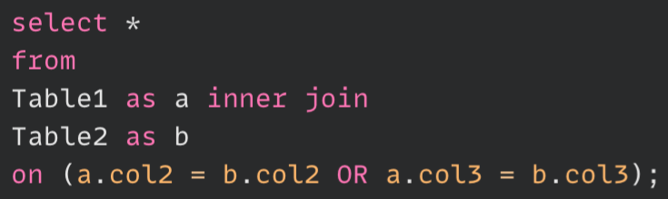 - Good
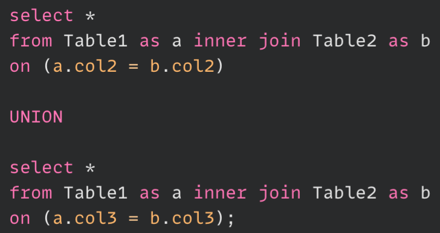 - UNION simply joins the outputs of two separate SELECT statements and retains only one occurrence of duplicated rows if there are any.
- Bad
- Style Guide
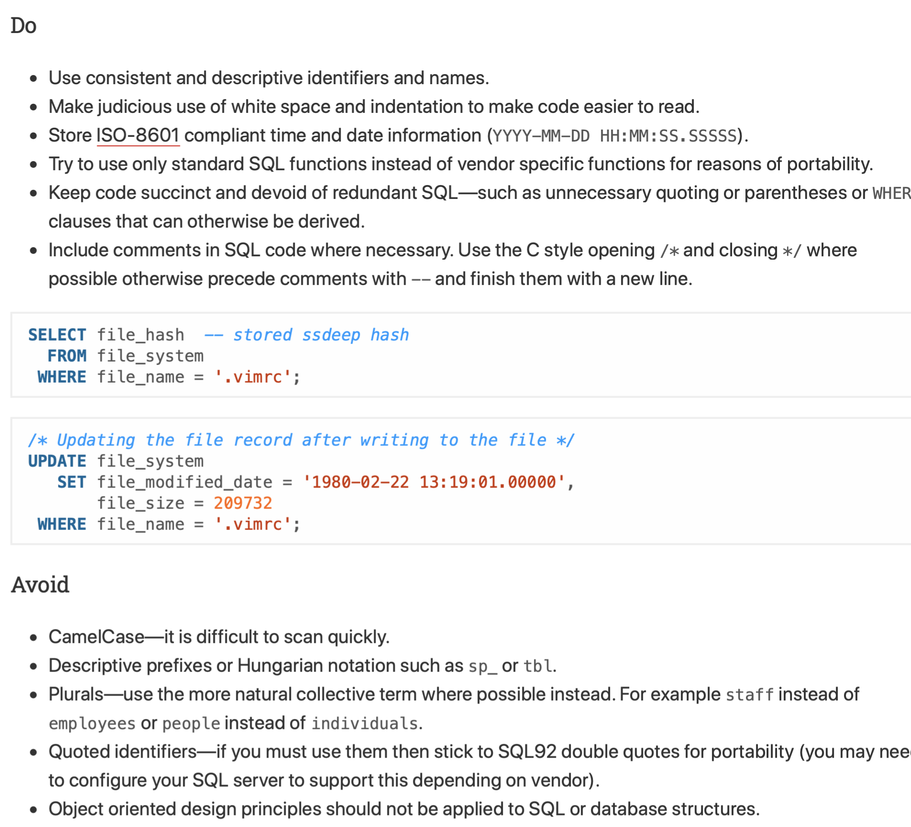
Indexes
Misc
- An index may consist of up to 16 columns
- The first column of the index must always be present in the query’s filter, order , join or group operations to be used
Create Index on an existing table (postgres)
CREATE INDEX score_index ON grades(score, student);- “score_index” is the name of the index
- “grades” is the name of the table
- “score” and “student” are fields to be used as the indexes
Create Index that only uses a specific character length
/* mysql */ CREATE TABLE test (blob_col BLOB, INDEX(blob_col(10)));- index only uses the first 10 characters of the column value of a BLOB column type
Create index with multiple columns
/* mysql */ CREATE TABLE test ( id INT NOT NULL, last_name CHAR(30) NOT NULL, first_name CHAR(30) NOT NULL, PRIMARY KEY (id), INDEX name (last_name,first_name) )Usage of multiple column index (** order of columns is important **)
SELECT * FROM test WHERE last_name='Jones'; SELECT * FROM test WHERE last_name='Jones' AND first_name='John'; SELECT * FROM test WHERE last_name='Jones' AND (first_name='John' OR first_name='Jon'); SELECT * FROM test WHERE last_name='Jones' AND first_name >='M' AND first_name < 'N';Index is used when both columns are used as part of filtering criteria or when only the left-most column is used
if you have a three-column index on (col1, col2, col3), you have indexed search capabilities on (col1), (col1, col2), and (col1, col2, col3).
Invalid usage of multiple column index
SELECT * FROM test WHERE first_name='John'; SELECT * FROM test WHERE last_name='Jones' OR first_name='John';- The “name” index won’t be used in these queries since
- first_name is NOT the left-most column specified in the index
- OR is used instead of AND
- The “name” index won’t be used in these queries since
Create index with DESC, ASC
/* mysql */ CREATE TABLE t ( c1 INT, c2 INT, INDEX idx1 (c1 ASC, c2 ASC), INDEX idx2 (c1 ASC, c2 DESC), INDEX idx3 (c1 DESC, c2 ASC), INDEX idx4 (c1 DESC, c2 DESC) );- Used by
ORDER BY- See Docs to see what operations and index types support Descending Indexes
- Note: idx_a on column_p, column_q desc is not the same as an * Index idx_a on column_q desc, column p or, * Index idx_b on column_p desc, column q
- Used by
Usage of Descending Indexes
ORDER BY c1 ASC, c2 ASC -- optimizer can use idx1 ORDER BY c1 DESC, c2 DESC -- optimizer can use idx4 ORDER BY c1 ASC, c2 DESC -- optimizer can use idx2 ORDER BY c1 DESC, c2 ASC -- optimizer can use idx3- See previous example for definition of idx* names
- See Docs to see what operations and index types support Descending Indexes
Partitioning
- Misc
- Also see
- all of your queries to the partitioned table must contain the
partition_keyin theWHEREclause
Views
A smaller data object that contains the subset of data resulting from a specific query
Whereas a query happens after data is loaded, a materialized view is a precomputation
The computation is done once, and changes to the data are incorporated as they occur, making subsequent updates to the view much cheaper and more efficient than querying the entire database from scratch.
Create a View
Example: Create view as select (CVAS)
CREATE VIEW high_earner AS SELECT p.id AS person_id, j.salary FROM People p JOIN Job j ON p.job = j.title WHERE j.salary >= 200000;
Query a view (same as a table):
SELECT * FROM high_earnerUpdate view
CREATE OR REPLACE VIEW high_earner AS SELECT p.id AS person_id, j.salary FROM People p JOIN Job j ON p.job = j.title WHERE j.salary >= 150000;- Expects the query output to retain the same number of columns, column names, and column data types. Thus, any modification that results in a change in the data structure will raise an error.
List views
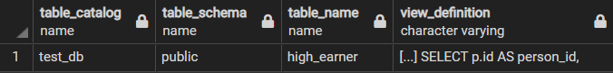SELECT * FROM information_schema.views WHERE table_schema NOT IN ('pg_catalog', 'information_schema');- “table_name” has the names of the views
- “view_definition” shows the query stored in the view
- WHERE command is included to omit built-in views from PostgreSQL.
Delete view:
DROP VIEW high_earner;
Variables
- User-defined
DECLARE and SET
-- Declare your variables DECLARE @start date DECLARE @stop date -- SET the relevant values for each variable SET @start = '2021-06-01' SET @stop = GETDATE()- DECLARE sets the variable type (e.g. date)
- SET assigns a value
Or just use DECLARE
DECLARE @Iteration Integer = 0;Examples
Example: Exclude 3 months of data from the query
SELECT t1.[DATETIME], COUNT(*) AS vol FROM Medium.dbo.Earthquakes t1 WHERE t1.[DATETIME] BETWEEN @start AND DATEADD(MONTH, -3, @stop) GROUP BY t1.[DATETIME] ORDER BY t1.[DATETIME] DESC;- See above for the definitions of @start and @stop
Example: Apply a counter
-- Declare the variable (a SQL Command, the var name, the datatype) DECLARE @counter INT; -- Set the counter to 20 SET @counter = 20; -- Print the initial value SELECT @counter AS _COUNT; -- Select and increment the counter by one SELECT @counter = @counter + 1; -- Print variable SELECT @counter AS _COUNT; -- Select and increment the counter by one SELECT @counter += 1; -- Print the variable SELECT @counter AS _COUNT;
- System
- ROWCOUNT - returns the number of rows affected by the last previous statement
Example
BEGIN SELECT product_id, product_name FROM production.products WHERE list_price > 100000; IF @@ROWCOUNT = 0 PRINT 'No product with price greater than 100000 found'; END
- ROWCOUNT - returns the number of rows affected by the last previous statement
Functions
“||” Concantenate strings. e.g ‘Post’ || ‘greSQL’ –> PostgreSQL
BEGIN…END- defines a compound statement or statement block. A compound statement consists of a set of SQL statements that execute together. A statement block is also known as a batch- A compound statement can have a local declaration for a variable, a cursor, a temporary table, or an exception
- Local declarations can be referenced by any statement in that compound statement, or in any compound statement nested within it.
- Local declarations are invisible to other procedures that are called from within a compound statement
- A compound statement can have a local declaration for a variable, a cursor, a temporary table, or an exception
COMMIT- a transaction control language that is used to permanently save the changes done in the transaction in tables/databases. The database cannot regain its previous state after its execution of commit.DATEADD- adds units of time to a variable or value- e.g.
DATEADD(month, -3, '2021-06-01')- subtracts 3 months from 2021-06-01
- e.g.
DATE_TRUNC- pulls a component of a date object.- e.g.
date_trunc('month', date_var) as month
- e.g.
DENSE_RANK- similar to theRANK, but it does not skip any numbers even if there is a tie between the rows.- Values are ranked by the column specified in ORDER BY expression of the window function
EXPLAIN- a means of running your query as a what-if to see what the planner thinks about it. It will show the process the system goes through to get to the data and return it.EXPLAIN SELECT s.id AS student_id, g.score FROM students AS s LEFT JOIN grades AS g ON s.id = g.student_id WHERE g.score > 90 ORDER BY g.score DESC; /* QUERY PLAN ---------- Sort (cost=80.34..81.88 rows=617 width=8) [...] Sort Key: g.score DESC [...] -> Hash Join (cost=16.98..51.74 rows=617 width=8) [...] Hash Cond: (g.student_id = s.id) [...] -> Seq Scan on grades g (cost=0.00..33.13 rows=617 width=8) [...] Filter: (score > 90) [...] -> Hash (cost=13.10..13.10 rows=310 width=4) [...] -> Seq Scan on students s (cost=0.00..13.20 rows=320 width=4) */- Sequentially scanning (“Seq Scan”) the grades and students tables because the tables aren’t indexed
- Any Seq Scan, parallel or not, is sub-optimal
EXPLAIN (BUFFERS)also shows how may data pages the database had to fetch using slow disk read operations (“read”), and how many of them were cached in memory (“shared hit”)
- Sequentially scanning (“Seq Scan”) the grades and students tables because the tables aren’t indexed
EXPLAIN ANALYZE- tells the planner to not only hypothesize on what it would do, but actually run the query and show the results.- shows where indexes are being hit — or not hit as it may be. You can step through and re-optimize your basic and complex queries.
GETDATE()- Gets the current dateGO- Not a sql function. Used by some interpreters as a reset.- i.e. any variables set before the GO statement will now not be recognized by the interpreter.
- Helps to separate code into different sections
ISDATE- boolean - checks that a variable is a date typeQUALIFY- clause filters the results of window functions.- useful when answering questions like fetching the most XXX value of each category
- QUALIFY does with window functions as what HAVING does with GROUP BY. As a result, in the order of execution, QUALIFY is evaluated after window functions.
- See Business Queries >> Get the latest order from each customer
UNNEST- BigQuery - takes an ARRAY and returns a table with a row for each element in the ARRAY (docs)- Google Analytics, Analysis >> Example 17
User Defined Functions (UDF)
Misc
- Available in SQL Server (Docs1, Docs2), Postgres (Docs), BigQuery (docs), etc.
- Keep a dictionary with the UDFs you’ve created and make sure to share it with any collaborators.
- Can be persistent or temporary
- Persistent UDFs can be used across multiple queries, while temporary UDFs only exist in the scope of a single query
Create
Example: temporary udf (BQ)
CREATE TEMP FUNCTION AddFourAndDivide(x INT64, y INT64) RETURNS FLOAT64 AS ( (x + 4) / y ); SELECT val, AddFourAndDivide(val, 2) FROM UNNEST([2,3,5,8]) AS val;Example: persistent udf (BQ)
CREATE FUNCTION mydataset.AddFourAndDivide(x INT64, y INT64) RETURNS FLOAT64 AS ( (x + 4) / y ); SELECT val, mydataset.AddFourAndDivide(val, 2) FROM UNNEST([2,3,5,8,12]) AS val;
Delete persistent udf:
DROP FUNCTION <udf_name>With Scalar subquery (BQ)
CREATE TEMP FUNCTION countUserByAge(userAge INT64) AS ( (SELECT COUNT(1) FROM users WHERE age = userAge) ); SELECT countUserByAge(10) AS count_user_age_10, countUserByAge(20) AS count_user_age_20, countUserByAge(30) AS count_user_age_30;
Loops
- Misc
- posgres docs for loops
- WHILE
Example: Incrementally add to a counter variable
-- Declare the initial value DECLARE @counter INT; SET @counter = 20; -- Print initial value SELECT @counter AS _COUNT; -- Create a loop BEGIN; -- Loop code starting point WHILE @counter < 30 SELECT @counter = @counter + 1; -- Loop finish END; -- Check the value of the variable SELECT @counter AS _COUNT;
- Cursors (Docs)
Rather than executing a whole query at once, it is possible to set up a cursor that encapsulates the query, and then read the query result a few rows at a time.
- One reason for doing this is to avoid memory overrun when the result contains a large number of rows. (However, PL/pgSQL users do not normally need to worry about that, since FOR loops automatically use a cursor internally to avoid memory problems.)
- A more interesting usage is to return a reference to a cursor that a function has created, allowing the caller to read the rows. This provides an efficient way to return large row sets from functions.
Example (article (do not pay attention dynamic sql. it’s for embedding sql in C programs))
DECLARE cur_orders CURSOR FOR SELECT order_id, product_id, quantity FROM order_details WHERE product_id = 456; product_inventory INTEGER; BEGIN OPEN cur_orders; LOOP FETCH cur_orders INTO order_id, product_id, quantity; EXIT WHEN NOT FOUND; SELECT inventory INTO product_inventory FROM products WHERE product_id = 456; product_inventory := product_inventory - quantity; UPDATE products SET inventory = product_inventory WHERE product_id = 456; END LOOP; CLOSE cur_orders; -- do something after updating the inventory, such as logging the changes END;- A table called “products” that contains information about all products, including the product ID, product name, and current inventory. You can use a cursor to iterate through all orders that contain a specific product and update its inventory.
- A cursor called “cur_orders” that selects all order details that contain a specific product ID. We then define a variable called “product_inventory” to store the current inventory of the product.
- Inside the loop, we fetch each order ID, product ID, and quantity from the cursor, subtract the quantity from the current inventory and update the products table with the new inventory value.
- Finally, we close the cursor and do something after updating the inventory, such as logging the changes.
Window Functions
Unlike GROUP BY, keeps original columns after an aggregation
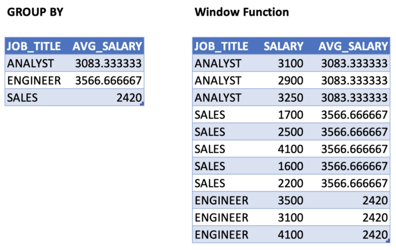- Allows you to work with both aggregate and non-aggregate values all at once
- Better performance than using GROUP BY + JOIN to get the same result
- Allows you to work with both aggregate and non-aggregate values all at once
Despite the order of operations, if you really need to have a window function inside a WHERE clause or GROUP BY clause, you may get around this limitation by using a subquery or a WITH query
Example: Remove duplicate rows
WITH temporary_employees as (SELECT employee_id, employee_name, department, ROW_NUMBER() OVER(PARTITION BY employee_name, department, employee_id) as row_count FROM Dummy_employees) SELECT * FROM temporary_employees WHERE row_count = 1
3 Types of Window Functions
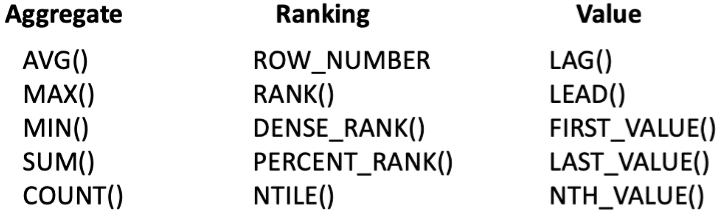- LEAD() will give you the row AFTER the row you are finding a value for.
- LAG() will give you the row BEFORE the row you are finding a value for.
- FIRST_VALUE() returns the first value in an ordered, partitioned data output.
General Syntax
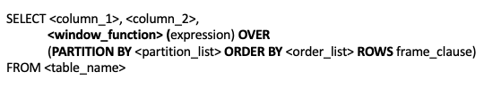- window_function is the name of the window function we want to use (e.g. see above)
- expression is the name of the column that we want the window function operated on.
- May not be necessary depending on what window_function is used
- OVER is just to signify that this is a window function
- expression is the name of the column that we want the window function operated on.
- PARTITION BY divides the rows into partitions so we can specify which rows to use to compute the window function
- partition_list is the name of the column(s) we want to partition by (i.e. group_by)
- ORDER BY is used so that we can order the rows within each partition. This is optional and does not have to be specified
- order_list is the name of the column(s) we want to order by
- ROWS (optional; typically not used) used to subset the rows within each partition.
- frame_clause defines how much to offset from our current row
- Syntax: ROWS BETWEEN <starting_row> AND <ending_row>
- Options for starting and ending row
- UNBOUNDED PRECEDING — all rows before the current row in the partition, i.e. the first row of the partition
- [some #] PRECEDING — # of rows before the current row
- CURRENT ROW — the current row
- [some #] FOLLOWING — # of rows after the current row
- UNBOUNDED FOLLOWING — all rows after the current row in the partition, i.e. the last row of the partition
- Examples
- ROWS BETWEEN 3 PRECEDING AND CURRENT ROW — this means look back the previous 3 rows up to the current row.
- ROWS BETWEEN UNBOUNDED PRECEDING AND 1 FOLLOWING — this means look from the first row of the partition to 1 row after the current row
- ROWS BETWEEN 5 PRECEDING AND 1 PRECEDING — this means look back the previous 5 rows up to 1 row before the current row
- ROWS BETWEEN UNBOUNDED PRECEDING AND UNBOUNDED FOLLOWING — this means look from the first row of the partition to the last row of the partition
- Options for starting and ending row
- window_function is the name of the window function we want to use (e.g. see above)
Example: Average Salary by Job Title
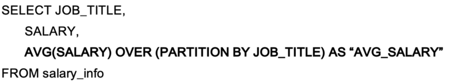
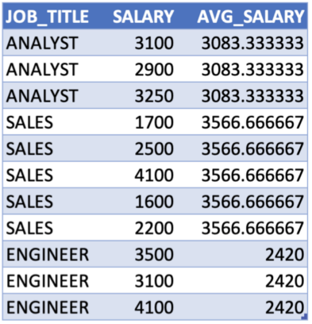Tables for Examples
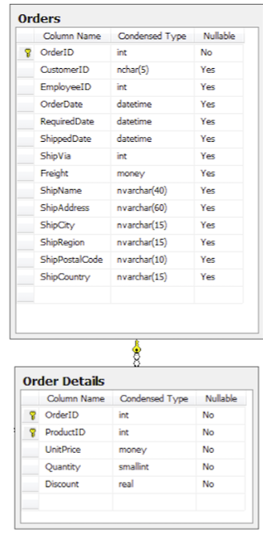Example: Average Unit Price for each CustomerId
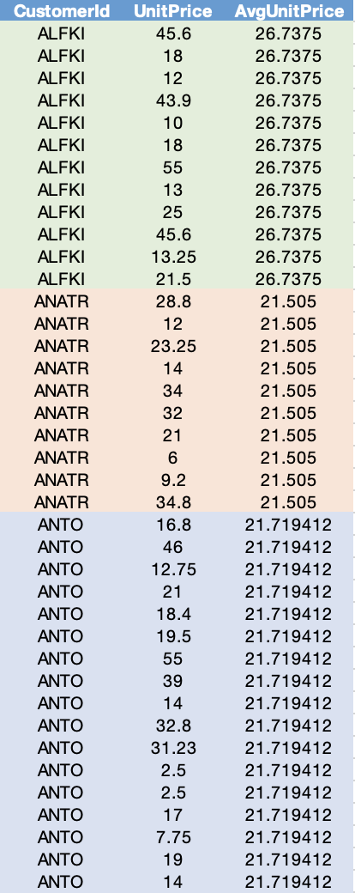SELECT CustomerId, UnitPrice, AVG(UnitPrice) OVER (PARTITION BY CustomerId) AS “AvgUnitPrice” FROM [Order] INNER JOIN OrderDetail ON [Order].Id = OrderDetail.OrderIdExample: Average Unit Price for each group of CustomerId AND EmployeeId
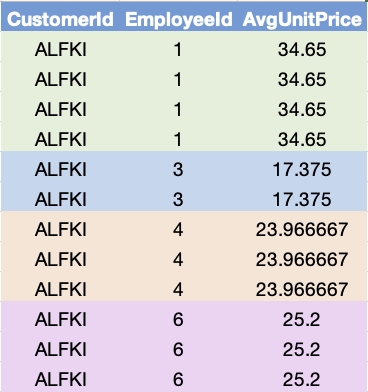SELECT CustomerId, EmployeeId, AVG(UnitPrice) OVER (PARTITION BY CustomerId, EmployeeId) AS “AvgUnitPrice” FROM [Order] INNER JOIN OrderDetail ON [Order].Id = OrderDetail.OrderIdExample: Create a new column that ranks Unit Price in descending order for each CustomerId
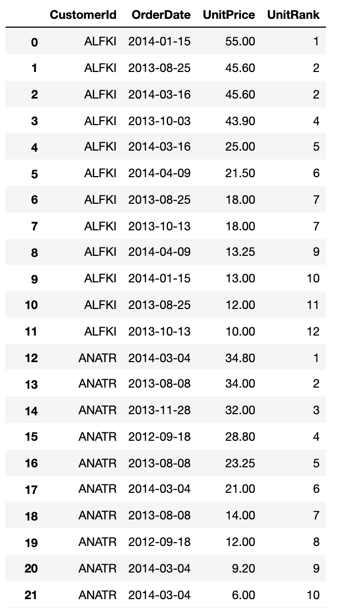SELECT CustomerId, OrderDate, UnitPrice, ROW_NUMBER() OVER (PARTITION BY CustomerId ORDER BY UnitPrice DESC) AS “UnitRank” FROM [Order] INNER JOIN OrderDetail ON [Order].Id = OrderDetail.OrderId- Substituting RANK in place of ROW_NUMBER should produce the same results
- Note that ranks are skipped (e.g. rank 3 for ALFKI) when there are rows with the same rank
- If you don’t want ranks skipped, use DENSE_RANK for the window function
Example: Create a new column that provides the previous order date’s Quantity for each ProductId
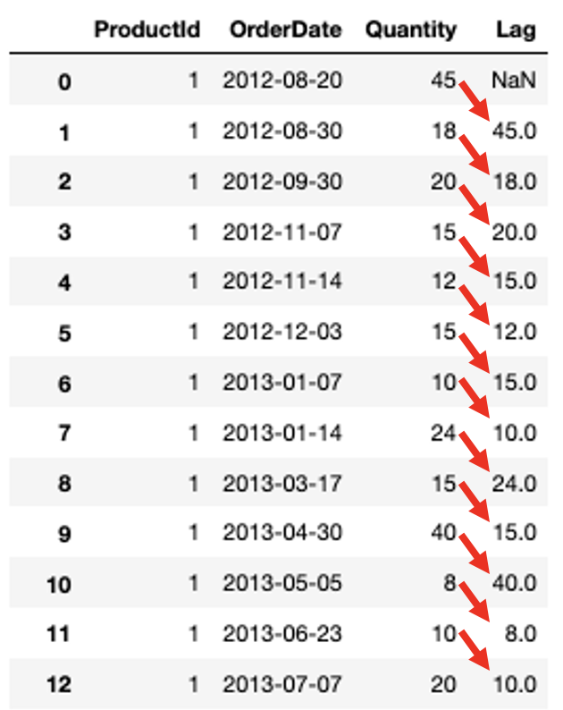SELECT ProductId, OrderDate, Quantity, LAG(Quantity) OVER (PARTITION BY ProductId ORDER BY OrderDate) AS "LAG" FROM [Order] INNER JOIN OrderDetail ON [Order].Id = OrderDetail.OrderId- Use LEAD for the following quantity
Example: Create a new column that provides the very first Quantity ever ordered for each ProductId
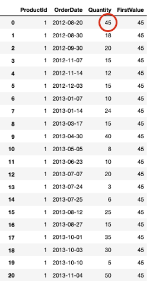SELECT ProductId, OrderDate, Quantity, FIRST_VALUE(Quantity) OVER (PARTITION BY ProductId ORDER BY OrderDate) AS "FirstValue" FROM [Order] INNER JOIN OrderDetail ON [Order].Id = OrderDetail.OrderIdExample: Calculate a cumulative moving average UnitPrice for each CustomerId
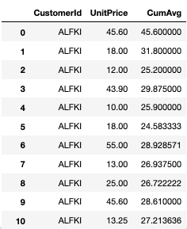SELECT CustomerId, UnitPrice, AVG(UnitPrice) OVER (PARTITION BY CustomerId ORDER BY CustomerId ROWS BETWEEN UNBOUNDED PRECEDING AND CURRENT ROW) AS “CumAvg” FROM [Order] INNER JOIN OrderDetail ON [Order].Id = OrderDetail.OrderIdExample: Rank customers for each department by amount spent
SELECT customer_name, customer_id, amount_spent, department_id, RANK(amount_spent) OVER(ORDER BY amount_spent DESC PARTITION BY department_id) AS spend_rank FROM employeesExample: Find the model and year of car that been on lot the longest
SELECT FIRST_VALUE(name) OVER(PARTITION BY model, year ORDER BY date_at_lot ASC) AS oldest_car_name model, year FROM carsRunning Totals/Averages (Cumulative Sums)
Uses
SUMas the window function- Just replace SUM with AVG to get running averages
Example
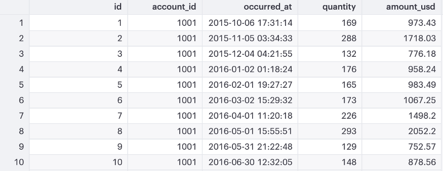- Generate a new dataset grouped by month, instead of timestamp. (CTE)
- Only include three fields: account_id, occurred_month and total_amount_usd
- Only computed for the following accounts: 1041 , 1051, 1061, 10141.
- Compute a running total ordered by occurred_month, without collapsing the rows in the result set.
- Display 2 columns: occurred_month and cum_amnt_usd_by_month
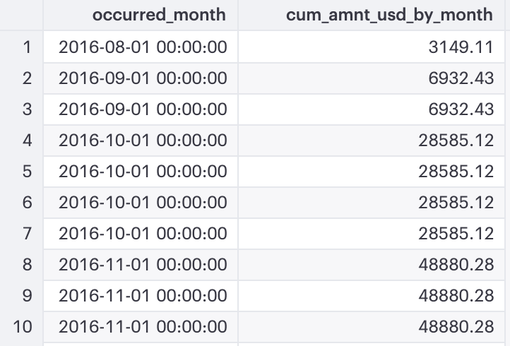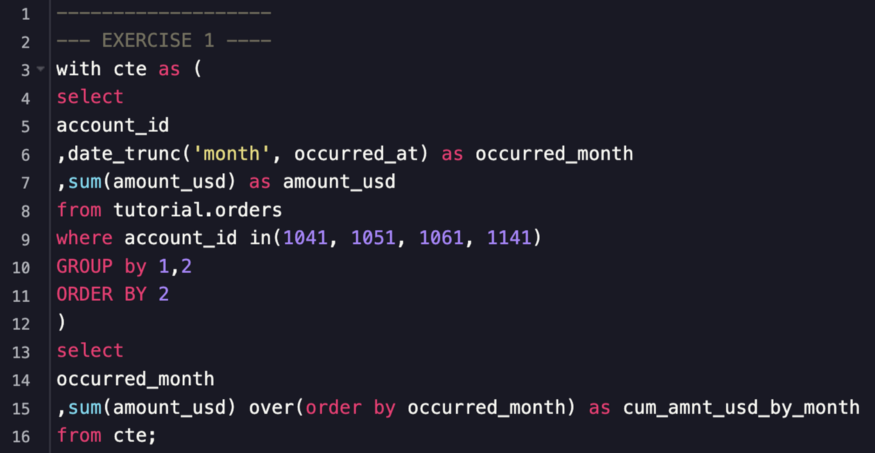
- Display 2 columns: occurred_month and cum_amnt_usd_by_month
- Because no partition was specified, the running total is applied on the full dataset and ordered by (ascending) occurred_month
- Generate a new dataset grouped by month, instead of timestamp. (CTE)
Example running total by grouping variable
- Using previous CTE
- Compute a running total by account_id, ordered by occurred_month, and account_id (i.e. a separate running total for each account_id.)
- Display 3 columns: account_id, occurred_month, and cum_mon_amnt_usd_by_account
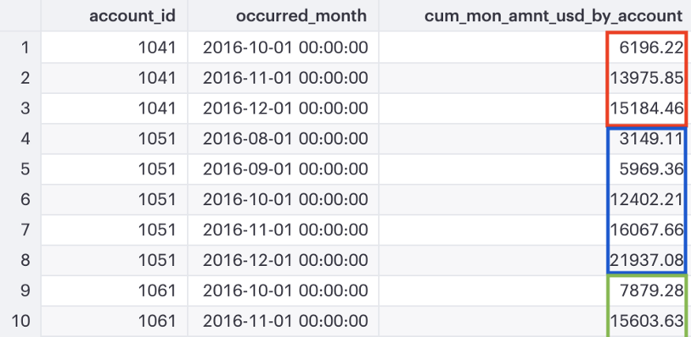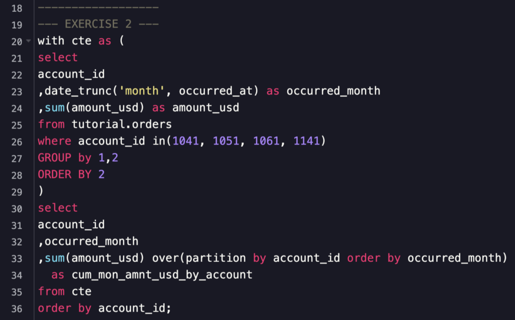
- Display 3 columns: account_id, occurred_month, and cum_mon_amnt_usd_by_account
- Compute a running total by account_id, ordered by occurred_month, and account_id (i.e. a separate running total for each account_id.)
- Same as previous example except a partition column (account_id) is added
- Using previous CTE
Example Running total over various window lengths
- Using previous CTE
- Compute a 3 months rolling running total using a window that includes the current month.
- Compute a 7 months rolling running total using a window where the current month is always the middle month.
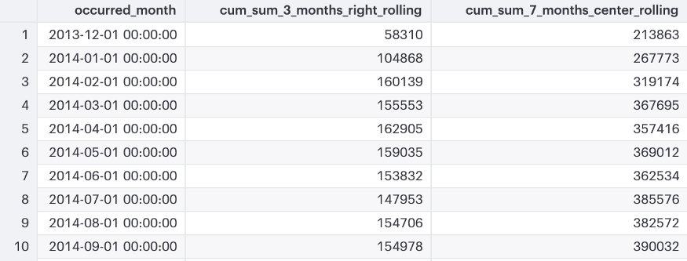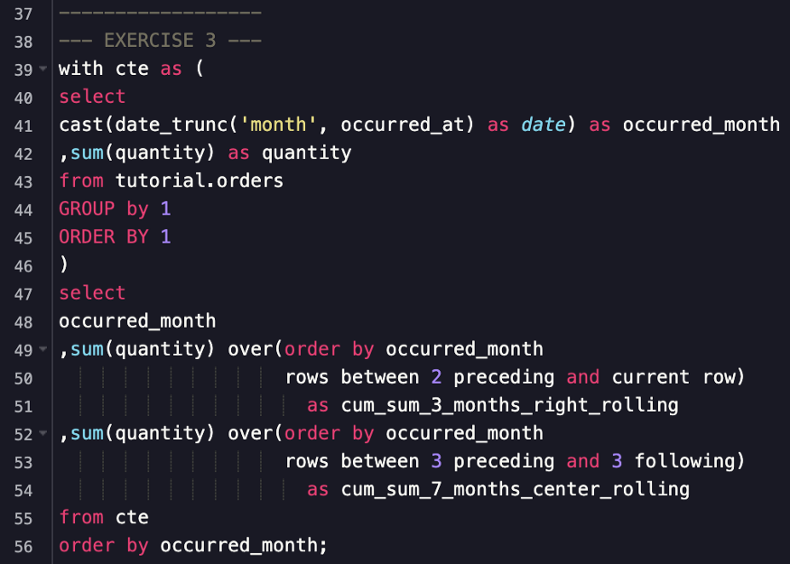
- First case uses 2 PRECEDING rows and the CURRENT_ROW
- Second case uses 3 PRECEDING rows and 3 FOLLOWING rows and the CURRENT_ROW
- Using previous CTE
Example: Calculate the number consecutive days spent in each country (sqlite)
with ordered as ( select created, country, lag(country) over (order by created desc) as previous_country from raw ), grouped as ( select country, created, count(*) filter ( where previous_country is null or previous_country != country ) over ( order by created desc rows between unbounded preceding and current row ) as grp from ordered ) select country, date(min(created)) as start, date(max(created)) as end, cast( julianday(date(max(created))) - julianday(date(min(created))) as integer ) as days from grouped group by country, grp order by start desc;-
- Goes over the code and thought process step-by-step with shows original data and results during intermediate steps
-
- Evidently only sqlite and postgres support filter. Someone in the thread suggest an alternate method.
Output:
country start end days United Kingdom 2023-06-08 2023-06-08 0 United States 2019-09-02 2023-05-11 1347 France 2019-08-25 2019-08-31 6 Madagascar 2019-07-31 2019-08-07 7 France 2019-07-25 2019-07-25 0 United States 2019-05-04 2019-06-30 57 United Kingdom 2018-08-29 2018-09-10 12 United States 2018-08-05 2018-08-10 5
-
Common Table Expressions (CTE)
The result set of a query which exists temporarily and for use only within the context of a larger query. Much like a derived table, the result of a CTE is not stored and exists only for the duration of the query.
Also see
- Window Functions >> Running Totals >> Examples
- Google, Google Analytics, Analysis >> Examples 12-15, 18, 19
Use Cases
- Needing to reference a derived table multiple times in a single query
- An alternative to creating a view in the database
- Performing the same calculation multiple times over across multiple query components
Improves readability and usually no performance difference
- Prior to PostgreSQL 12, https://hakibenita.com/be-careful-with-cte-in-postgre-sql , something with the caching mechanism created a bottleneck. Currently, version 13 is the latest, so hopefully not a common problem anymore.
Steps
- Initiate a CTE using “WITH”
- Provide a name for the result soon-to-be defined query
- After assigning a name, follow with “AS”
- Specify column names (optional step)
- Define the query to produce the desired result set
- If multiple CTEs are required, initiate each subsequent expression with a comma and repeat steps 2-4.
- Reference the above-defined CTE(s) in a subsequent query
Syntax
WITH expression_name_1 AS (CTE query definition 1) [, expression_name_X AS (CTE query definition X) , etc ] SELECT expression_A, expression_B, ... FROM expression_name_1Example
Comparison with a “derived” query
“What is the average monthly cost per campaign for the company’s marketing efforts?”
Using CTE workflow
-- define CTE: WITH Cost_by_Month AS (SELECT campaign_id AS campaign, TO_CHAR(created_date, 'YYYY-MM') AS month, SUM(cost) AS monthly_cost FROM marketing WHERE created_date BETWEEN NOW() - INTERVAL '3 MONTH' AND NOW() GROUP BY 1, 2 ORDER BY 1, 2) -- use CTE in subsequent query: SELECT campaign, avg(monthly_cost) as "Avg Monthly Cost" FROM Cost_by_Month GROUP BY campaign ORDER BY campaignUsed derived query
-- Derived SELECT campaign, avg(monthly_cost) as "Avg Monthly Cost" FROM -- this is where the derived query is used (SELECT campaign_id AS campaign, TO_CHAR(created_date, 'YYYY-MM') AS month, SUM(cost) AS monthly_cost FROM marketing WHERE created_date BETWEEN NOW() - INTERVAL '3 MONTH' AND NOW() GROUP BY 1, 2 ORDER BY 1, 2) as Cost_By_Month GROUP BY campaign ORDER BY campaign
Example
- Count the number of interactions of new users
- Steps
- Get new users
- Count interactions
- Get interactions of new users
WITH new_users AS ( SELECT id FROM users WHERE created >= '2021-01-01' ), count_interactions AS ( SELECT id, COUNT(*) n_interactions FROM interactions GROUP BY id ), interactions_by_new_users AS ( SELECT id, n_interactions FROM new_users LEFT JOIN count_interactions USING (id) ) SELECT * FROM interactions_by_new_usersExample
Find the average top Math test score for students in California
Steps
- Get a subset of students (California)
- Get a subset of test scores (Math)
- Join them together to get all Math test scores from California students
- Get the top score per student
- Take the overall average
Derived Query (i.e. w/o CTE)
SELECT AVG(score) FROM (SELECT students.id, MAX(test_results.score) as score FROM students JOIN schools ON ( students.school_id = schools.id AND schools.state = 'CA' ) JOIN test_results ON ( students.id = test_results.student_id AND test_results.subject = 'math' ) GROUP BY students.id) as tmpUsing CTE
WITH student_subset as ( SELECT students.id FROM students JOIN schools ON ( students.school_id = schools.id AND schools.state = 'CA' ) ), score_subset as ( SELECT student_id, score FROM test_results WHERE subject = 'math' ), student_scores as ( SELECT student_subset.id, score_subset.score FROM student_subset JOIN score_subset ON ( student_subset.id = score_subset.student_id ) ), top_score_per_student as ( SELECT id, MAX(score) as score FROM student_scores GROUP BY id ) SELECT AVG(score) FROM top_score_per_student
Strings
Concatenate
“||”
SELECT 'PostgreSQL' || ' ' || 'Databases' AS result; result -------------- PostgreSQL DatabasesCONCATSELECT CONCAT('PostgreSQL', ' ', 'Databases') AS result; result -------------- PostgreSQL DatabasesWith NULL values
SELECT CONCAT('Harry', NULL, 'Peter'); -------------- HarryPeter- “||” won’t work with NULLs
Columns
SELECT first_name, last_name, CONCAT(first_name,' ' , last_name) "Full Name" FROM candidates;- New column, “Full Name”, is created with concatenated columns
Splitting (BQ)
SELECT *, CASE WHEN ARRAY_LENGTH(SPLIT(page_location, '/')) >= 5 AND CONTAINS_SUBSTR(ARRAY_REVERSE(SPLIT(page_location, '/'))[SAFE_OFFSET(0)], '+') AND (LOWER(SPLIT(page_location, '/')[SAFE_OFFSET(4)]) IN ('accessories','apparel','brands','campus+collection','drinkware', 'electronics','google+redesign', 'lifestyle','nest','new+2015+logo','notebooks+journals', 'office','shop+by+brand','small+goods','stationery','wearables' ) OR LOWER(SPLIT(page_location, '/')[SAFE_OFFSET(3)]) IN ('accessories','apparel','brands','campus+collection','drinkware', 'electronics','google+redesign', 'lifestyle','nest','new+2015+logo','notebooks+journals', 'office','shop+by+brand','small+goods','stationery','wearables' ) ) THEN 'PDP' WHEN NOT(CONTAINS_SUBSTR(ARRAY_REVERSE(SPLIT(page_location, '/'))[SAFE_OFFSET(0)], '+')) AND (LOWER(SPLIT(page_location, '/')[SAFE_OFFSET(4)]) IN ('accessories','apparel','brands','campus+collection','drinkware', 'electronics','google+redesign', 'lifestyle','nest','new+2015+logo','notebooks+journals', 'office','shop+by+brand','small+goods','stationery','wearables' ) OR LOWER(SPLIT(page_location, '/')[SAFE_OFFSET(3)]) IN ('accessories','apparel','brands','campus+collection','drinkware', 'electronics','google+redesign', 'lifestyle','nest','new+2015+logo','notebooks+journals', 'office','shop+by+brand','small+goods','stationery','wearables' ) ) THEN 'PLP' ELSE page_title END AS page_title_adjusted FROM unnested_events- From article, gist
- Query is creating a new categorical column, “page_title_adjusted,” that is “PDP” when a substring in “page_location” is one of a set of words, and “PLP” when it’s not, and the value of page_title otherwise.
- SPLIT splits the string by separator, ‘/’
- CONTAINS_SUBSTR is looking for substring with a “+”
- [SAFE_OFFSET(3)] pulls the 4th substring (think this indexes by 0?)
- After it’s been reversed via ARRAY_REVERSE (?)
- ELSE says use the value for page_title when length of the substrings after splitting page_location is 5 or less
- “unnested_events” is a CTE
Arrays
Misc
- PostGres
- Indexing Arrays starts at 1, not at 0
- PostGres
Create Array (BQ)
SELECT ARRAY (SELECT 1 UNION ALL SELECT 2 UNION ALL SELECT 3) AS new_array; +-----------+ | new_array | +-----------+ | [1, 2, 3] | +-----------+ SELECT ARRAY (SELECT AS STRUCT 1, 2, 3 UNION ALL SELECT AS STRUCT 4, 5, 6) AS new_array; +------------------------+ | new_array | +------------------------+ | [{1, 2, 3}, {4, 5, 6}] | +------------------------+ SELECT ARRAY (SELECT AS STRUCT [1, 2, 3] UNION ALL SELECT AS STRUCT [4, 5, 6]) AS new_array; +----------------------------+ | new_array | +----------------------------+ | [{[1, 2, 3]}, {[4, 5, 6]}] | +----------------------------+Create a table with Arrays (Postgres)
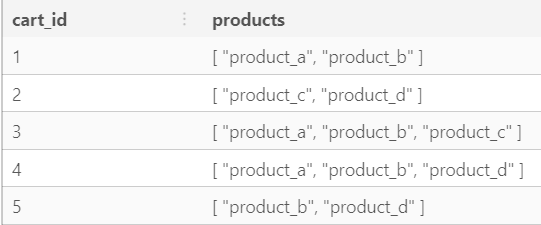CREATE TEMP TABLE shopping_cart ( cart_id serial PRIMARY KEY, products text ARRAY ); INSERT INTO shopping_cart(products) VALUES (ARRAY['product_a', 'product_b']), (ARRAY['product_c', 'product_d']), (ARRAY['product_a', 'product_b', 'product_c']), (ARRAY['product_a', 'product_b', 'product_d']), (ARRAY['product_b', 'product_d']); -- alt syntax w/o ARRAY INSERT INTO shopping_cart(products) VALUES ('{"product_a", "product_d"}');- Also see Basics >> Add Data >> Example: chatGPT
Subset an array (postgres)
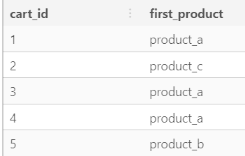SELECT cart_id, products[1] AS first_product -- indexing starts at 1 FROM shopping_cart;Slice an array (postgres)
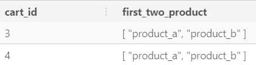SELECT cart_id, products [1:2] AS first_two_products FROM shopping_cart WHERE CARDINALITY(products) > 2;Unnest an array (postgres)
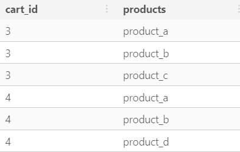SELECT cart_id, UNNEST(products) AS products FROM shopping_cart WHERE cart_id IN (3, 4);- Useful if you want to perform a join
Filter according to items in arrays (postgres)
SELECT cart_id, products FROM shopping_cart WHERE 'product_c' = ANY (products);- Only rows with arrays that have “product_c” will be returned
Change array values using
UPDATE,SET-- update arrays UPDATE shopping_cart SET products = ARRAY['product_a','product_b','product_e'] WHERE cart_id = 1; UPDATE shopping_cart SET products[1] = 'product_f' WHERE cart_id = 2; SELECT * FROM shopping_cart ORDER BY cart_id;First update: all arrays where cart_id == 1 are set to [‘product_a’,‘product_b’,‘product_e’]
Second update: all array first values where cart_id == 2 are set to ‘product_f’
Insert array values
ARRAY_APPEND- puts value at the end of the arrayUPDATE shopping_cart SET products = ARRAY_APPEND(products, 'product_x') WHERE cart_id = 1;- arrays in product column where cart_id == 1 get “product_x” appended to the end of their arrays
ARRAY_PREPEND- puts value at the beginning of the arrayUPDATE shopping_cart SET products = ARRAY_PREPEND('product_x', products) WHERE cart_id = 2;- arrays in product column where cart_id == 2 get “product_x” prepended to the beginning of their arrays
ARRAY_REMOVE- remove array itemUPDATE shopping_cart SET products = array_remove(products, 'product_e') WHERE cart_id = 1;- arrays in product column where cart_id == 1 get “product_e” removed from their arrays
ARRAY_CONCAT(BQ),ARRAY_CAT(postgres) - ConcantenateSELECT ARRAY_CONCAT([1, 2], [3, 4], [5, 6]) as count_to_six; +--------------------------------------------------+ | count_to_six | +--------------------------------------------------+ | [1, 2, 3, 4, 5, 6] | +--------------------------------------------------+ -- postgres SELECT cart_id, ARRAY_CAT(products, ARRAY['promo_product_1', 'promo_product_2']) FROM shopping_cart ORDER BY cart_id;ARRAY_TO_STRING- Coerce to string (BQ)WITH items AS (SELECT ['coffee', 'tea', 'milk' ] as list UNION ALL SELECT ['cake', 'pie', NULL] as list) SELECT ARRAY_TO_STRING(list, '--') AS text FROM items; +--------------------------------+ | text | +--------------------------------+ | coffee--tea--milk | | cake--pie | +--------------------------------+ WITH items AS (SELECT ['coffee', 'tea', 'milk' ] as list UNION ALL SELECT ['cake', 'pie', NULL] as list) SELECT ARRAY_TO_STRING(list, '--', 'MISSING') AS text FROM items; +--------------------------------+ | text | +--------------------------------+ | coffee--tea--milk | | cake--pie--MISSING | +--------------------------------+ARRAY_AGG- gather values of a group by variable into an array (doc)Makes the output more readable
Example: Get categories for each brand
-- without array_agg select brand, category from order_item group by brand, category order by brand, category ; Results: | brand | category | | ------ | ---------- | | Arket | jacket | | COS | shirts | | COS | trousers | | COS | vest | | Levi's | jacket | | Levi's | jeans | -- with array_agg select brand, array_agg(distinct category) as all_categories from order_item group by brand order by brand ; Results: | brand | all_categories | | ------ | ---------------------------- | | Arket | ['jacket'] | | COS | ['shirts','trousers','vest'] | | Levi's | ['jacket','jeans'] | | Uniqlo | ['shirts','t-shirts','vest'] |
ARRAY_SIZE- function takes an array or a variant as input and returns the number of items within the array/variant (doc)Example: How many categories does each brand have?
select brand, array_agg(distinct category) as all_categories, array_size(all_categories) as no_of_cat from order_item group by brand order by brand ; Results: | brand | all_categories | no_of_cat | | ------ | --------------------------- | --------- | | Arket | ['jacket'] | 1 | | COS | ['shirts','trousers','vest'] | 3 | | Levi's | ['jacket','jeans'] | 2 | | Uniqlo | ['shirts','t-shirts','vest'] | 3 | -- postgres using CARDINALITY to get array_size SELECT cart_id, CARDINALITY(products) AS num_products FROM shopping_cart;
ARRAY_CONTAINSchecks if a variant is included in an array and returns a boolean value. (doc)Variant is just a specific category
Need to cast the item you’d like to check as a variant first
Syntax:
ARRAY_CONTAINS(variant, array)Example: What brands have jackets?
select brand, array_agg(distinct category) as all_categories, array_size(all_categories) as no_of_cat, array_contains('jacket'::variant,all_categories) as has_jacket from order_item group by brand order by brand ; Results: | brand | all_categories | no_of_cat | has_jacket | | ------ | --------------------------- | --------- | ---------- | | Arket | ['jacket'] | 1 | true | | COS | ['shirts','trousers','vest'] | 3 | false | | Levi's | ['jacket','jeans'] | 2 | true | | Uniqlo | ['shirts','t-shirts','vest'] | 3 | false | -- postgres contains_operator, @> SELECT cart_id, products FROM shopping_cart WHERE products @> ARRAY['product_a', 'product_b'];- “@>” example returns all rows with arrays containing product_a and product_b
Business Queries
Simple Moving Average (SMA)
Example: 7-day SMA including today
SELECT Date, Conversions, AVG(Conversions) OVER (ORDER BY Date ROWS BETWEEN 6 PRECEDING AND CURRENT ROW) as SMA FROM daily_sales
Example: 3-day SMA not including today
select date, sales, avg(sales) over (order by date rows between 3 preceding and current row - 1) as moving_avg from table_daily_salesExample: Rank product categories by shipping cost for each shipping address
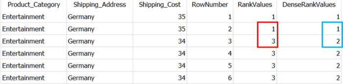SELECT Product_Category, Shipping_Address, Shipping_Cost, ROW_NUMBER() OVER (PARTITION BY Product_Category, Shipping_Address ORDER BY Shipping_Cost DESC) as RowNumber, RANK() OVER (PARTITION BY Product_Category, Shipping_Address ORDER BY Shipping_Cost DESC) as RankValues, DENSE_RANK() OVER (PARTITION BY Product_Category, Shipping_Address ORDER BY Shipping_Cost DESC) as DenseRankValues FROM Dummy_Sales_Data_v1 WHERE Product_Category IS NOT NULL AND Shipping_Address IN ('Germany','India') AND Status IN ('Delivered')RANK()retrieves ranked rows based on the condition ofORDER BYclause. As you can see there is a tie between 1st two rows i.e. first two rows have same value in Shipping_Cost column (which is mentioned in ORDER BY clause).DENSE_RANKis similar to theRANK, but it does not skip any numbers even if there is a tie between the rows. This you can see in Blue box in the above picture.- Rank resets to 1 when “Shipping_Address” changes location
Example: Total order quantity for each month
SELECT strftime('%m', OrderDate) as Month, SUM(Quantity) as Total_Quantity from Dummy_Sales_Data_v1 GROUP BY strftime('%m', OrderDate)strftimeextracts the month (%m) from the datetime column, “OrderDate”
Example: Daily counts of open jobs
- The issue is that there aren’t rows for transactions that remain in a type of holding status
- e.g. Job Postings website has date columns for the date the job posting was created, the date the job posting went live on the website, and the date the job posting was taken down (action based timestamps), but no dates for the status between “went live” and “taken down”.
-- create a calendar column SELECT parse_datetime('2020–01–01 08:00:00', 'yyyy-MM-dd H:m:s') + (interval '1' day * d) as cal_date from FROM ( SELECT ROW_NUMBER() OVER () -1 as d FROM (SELECT 0 as n UNION SELECT 1) p0, (SELECT 0 as n UNION SELECT 1) p1, (SELECT 0 as n UNION SELECT 1) p2, (SELECT 0 as n UNION SELECT 1) p3, (SELECT 0 as n UNION SELECT 1) p4, (SELECT 0 as n UNION SELECT 1) p5, (SELECT 0 as n UNION SELECT 1) p6, (SELECT 0 as n UNION SELECT 1) p7, (SELECT 0 as n UNION SELECT 1) p8, (SELECT 0 as n UNION SELECT 1) p9, (SELECT 0 as n UNION SELECT 1) p10 ) -- left-join your table to the calendar column Select c.cal_date, count(distinct opp_id) as "historical_prospects" From calendar c Left Join opportunities o on o.stage_entered ≤ c.cal_date and (o.stage_exited is null or o.stage_exited > c.cal_date)- Calendar column should probably be a CTE
- Notes from Using SQL to calculate trends based on historical status
- Some flavours of SQL have a generate_series function, which will create this calendar column for you
- For one particular month, then create an indicator column with “if posting_publish_date ≤ 2022–01–01 and (posting_closed_date is null or posting_closed_date > 2022–01–31) then True” and then filter for True and count.
- The issue is that there aren’t rows for transactions that remain in a type of holding status
Example: Get the latest order from each customer
-- Using QUALIFY select date, customer_id, order_id, price from customer_order_table qualify row_number() over (partition by customer_id order by date desc) = 1 ; -- CTE w/window function with order_order as ( select date, customer_id, order_id, price, row_number() over (partition by customer_id order by date desc) as order_of_orders from customer_order_table ) select * from order_order where order_of_orders = 1 ; Results: | date | customer_id | order_id | price | |------------|-------------|----------|-------| | 2022-01-03 | 002 | 212 | 350 | | 2022-01-06 | 005 | 982 | 300 | | 2022-01-07 | 001 | 109 | 120 |
Transactions
Misc
- Also see
- Terms >> Transaction
- Database, Warehouses >> Database Triggers - Shows how to efficiently transfer data from a transactional database to a warehouse/relational database by setting up event triggers and staging tables.
- When the transaction is successful, COMMIT is applied. When the transaction is aborted, incorrect execution, system failure ROLLBACK occurs.
- Also see
Only used with INSERT, UPDATE and DELETE
BEGIN TRANSACTION: It indicates the start point of an explicit or local transaction.- Represents a point ast which the data referenced by a connection is logically and physically consistent.
- If errors are encountered, all data modifications made after the BEGIN TRANSACTION can be rolled back to return the data to this known state of consistency
- Syntax:
BEGIN TRANSACTION transaction_name ;
SET TRANSACTION: Places a name on a transaction.- Syntax:
SET TRANSACTION [ READ WRITE | READ ONLY ];
- Syntax:
COMMIT: used to permanently save the changes done in the transaction in tables/databases. The database cannot regain its previous state after its execution of commit.If everything is in order with all statements within a single transaction, all changes are recorded together in the database is called committed. The COMMIT command saves all the transactions to the database since the last COMMIT or ROLLBACK command
Example: Delete records
DELETE FROM Student WHERE AGE = 20; COMMIT;- Deletes those records from the table which have age = 20 and then commits the changes in the database.
ROLLBACK: used to undo the transactions that have not been saved in the database. The command is only been used to undo changes since the last commit- If any error occurs with any of the SQL grouped statements, all changes need to be aborted. The process of reversing changes is called rollback. This command can only be used to undo transactions since the last COMMIT or ROLLBACK command was issued.
- Syntax:
ROLLBACK;
SAVEPOINT: creates points within the groups of transactions in which to ROLLBACK.Syntax:
SAVEPOINT <savepoint_name>;A savepoint is a point in a transaction in which you can roll the transaction back to a certain point without rolling back the entire transaction.
Remove a savepoint:
RELEASE SAVEPOINT <savepoint_name>Example: Rollback a deletion
SAVEPOINT SP1; //Savepoint created. DELETE FROM Student WHERE AGE = 20; //deleted SAVEPOINT SP2; //Savepoint created. ROLLBACK TO SP1; //Rollback completed.
Processing Expressions
Division and NULLS
Any division with NULL values with have a result of NULL.
isNullallows to get a different resulting valueSELECT IsNull(<column>, 0) / 45- All NULL values in the column will replaced with 0s during the division operation.
Use multiple conditions in a WHERE expression
select * from XXX_table where 1=1 (if condition A) and clause 1 (if condition B) and clause 2 (if condition C) and clause 3 ;- The “1=1” prevents errors that would occur when the first condition doesn’t apply to any rows.
- Can also use “true”
- The “1=1” prevents errors that would occur when the first condition doesn’t apply to any rows.
Select unique rows without using DISTINCT
Using UNION
SELECT employee_id, employee_name, department FROM Dummy_employees UNION SELECT employee_id, employee_name, department FROM Dummy_employees- there must be same number and order of columns in both the SELECT statements
Using INTERSECT
SELECT employee_id, employee_name, department FROM Dummy_employees INTERSECT SELECT employee_id, employee_name, department FROM Dummy_employees- There must be same number and order of columns in both the SELECT statements
Using ROW_NUMBER
WITH temporary_employees as ( SELECT employee_id, employee_name, department, ROW_NUMBER() OVER(PARTITION BY employee_name, department, employee_id) as row_count FROM Dummy_employees ) SELECT * FROM temporary_employees WHERE row_count = 1Using GROUP BY
SELECT employee_id, employee_name, department FROM Dummy_employees GROUP BY employee_id, employee_name, department- Just need to group by all the columns. Useful to use in conjunction with aggregate functions.
CASE WHEN
SELECT OrderID, OrderDate, Sales_Manager, Quantity, CASE WHEN Quantity > 51 THEN 'High' WHEN Quantity < 51 THEN 'Low' ELSE 'Medium' END AS OrderVolume FROM Dummy_Sales_Data_v1END ASspecifies the name of the new column, “OrderVolume”ELSEspecifies the value when none of the conditions are met- If you did not mention ELSE clause and no condition is satisfied, the query will return NULL for that specific record
Pivot Wider
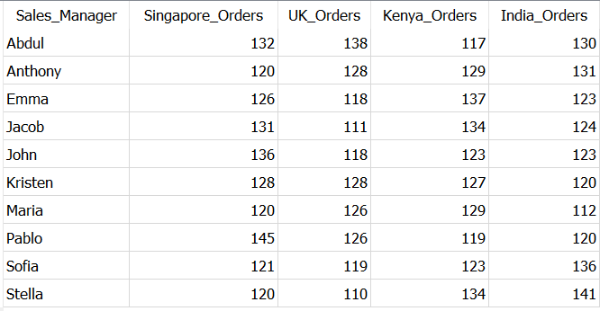SELECT Sales_Manager, COUNT(CASE WHEN Shipping_Address = 'Singapore' THEN OrderID END) AS Singapore_Orders, COUNT(CASE WHEN Shipping_Address = 'UK' THEN OrderID END) AS UK_Orders, COUNT(CASE WHEN Shipping_Address = 'Kenya' THEN OrderID END) AS Kenya_Orders, COUNT(CASE WHEN Shipping_Address = 'India' THEN OrderID END) AS India_Orders FROM Dummy_Sales_Data_v1 GROUP BY Sales_Manager- Depending on your use-case you can also use different aggregation such as SUM, AVG, MAX, MIN with CASE statement.
Extract components from date-time columns
/* MySQL */ EXTRACT(part_of_date FROM date_time_column_name) YEAR(date_time_column_name) MONTH(date_time_column_name) MONTHNAME(date_time_column_name) DATE_FORMAT(date_time_column_name) /* SQLte */ SELECT strftime('%m', OrderDate) as Monthstrftimecodes
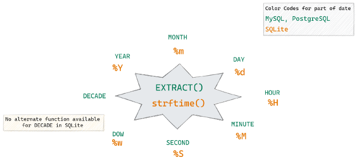
Duplicated Rows
Remove duplicated rows with window function
WITH temporary_employees as (SELECT employee_id, employee_name, department, ROW_NUMBER() OVER(PARTITION BY employee_name, department, employee_id) as row_count FROM Dummy_employees) SELECT * FROM temporary_employees WHERE row_count = 1Use a hash column as id column, then test for duplicates, remove them or investigate them (BigQuery)
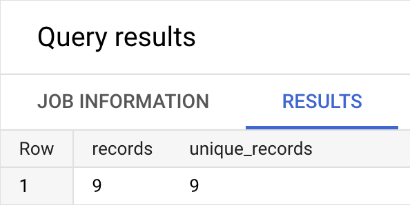WITH inbound_zoo_elephants AS ( SELECT * FROM flowfunctions.examples.zoo_elephants ), add_row_hash AS ( SELECT *, TO_HEX(MD5(TO_JSON_STRING(inbound_zoo_elephants))) AS hex_row_hash FROM inbound_zoo_elephants ) SELECT COUNT(*) AS records, COUNT(DISTINCT hex_row_hash) AS unique_records FROM add_row_hash- No duplicate records found, since “records” = 9 and “unique_records” = 9
- if records > unique_records, duplicates exist
- Can select distinct hex_row_hash if you want to remove duplicates
- Can count hex_row_hash then filter where hex_row_hash > 1 to find which rows are duplicates
- Notes from link
- Description
- flowfunctions is the project name
- examples is a directory (?)
- zoo_elephants is the dataset
- Steps
- TO_JSON_STRING - creates column with json string for each row
- MD5 hashes that string
- TO_HEX makes it alpha-numeric and gets rid of the symbols in the hash
- Easier to deal with in BigQuery
- Assume this is still unique (?)
- Note: By adding “true” value,
TO_JSON_STRING(inbound_zoo_elephants, true), TO_JSON_STRING adds line breaks to the json string for easier readability. - Hashing function options
- MD5 - shortest one (16 characters), fine for this use case
- cryptographically broken, returns 16 characters and suffices for our use-case. Other options are
- FARM_FINGERPRINT - returns a signed integer of variable length
- SHA1, SHA256 and SHA512, which return 20, 32 and 64 bytes respectively and are more secure for cryptographic use cases.
- MD5 - shortest one (16 characters), fine for this use case
- No duplicate records found, since “records” = 9 and “unique_records” = 9
Nested Data
- Recursive CTE
Recursive CTEs are used primarily when you want to query hierarchical data or graphs. This could be a company’s organizational structure, a family tree, a restaurant menu, or various routes between cities
Also see
- What Is a Recursive CTE in SQL?
- Tutorial, 3 examples, and links to other articles
- What Is a Recursive CTE in SQL?
Syntax
WITH RECURSIVE cte_name AS ( cte_query_definition (the anchor member) UNION ALL cte_query_definition (the recursive member) ) SELECT * FROM cte_name;Example: : postgres
WITH RECURSIVE category_tree(id, name, parent_id, depth, path) AS ( SELECT id, name, parent_id, 1, ARRAY[id] FROM categories WHERE parent_id IS NULL UNION ALL SELECT categories.id, categories.name, categories.parent_id, category_tree.depth + 1, path || categories.id FROM categories JOIN category_tree ON categories.parent_id = category_tree.id ) SELECT id, name, parent_id, depth, path FROM category_tree;- CTE (
WITH) +RECURSIVEsays it’s a recursive query. UNION ALLcombines the results of both statements.- Example is defined by 2 Select statements
- Anchor Member: First SELECT statement selects the root nodes of the category tree (nodes with no parent)
- Root node is indicated by “parent_id” = NULL
- Recursive member: Second SELECT statement selects the child nodes recursively
- Anchor Member: First SELECT statement selects the root nodes of the category tree (nodes with no parent)
- Also see Arrays for further examples of the use of
UNION ALL
- Example is defined by 2 Select statements
- The “depth” column is used to keep track of the depth of each category node in the tree.
- “1” in the first statement
- “category_tree.depth + 1” in the second statement
- With every recursion, the CTE will add 1 to the previous depth level, and it will do that until it reaches the end of the hierarchy
- The “path” column is an array that stores the path from the root to the current node.
- “ARRAY[id]” in the first statement
- “path || categories.id” in the second statement
- “||” concatenates “path” and “id” columns (See Strings)
- CTE (
- Recursive CTE
Preprocess Time Series with 4 Lags (article)
WITH top_customers as ( --- select the customter ids you want to track ), transactions as ( SELECT cust_id, dt, date_trunc('hour', cast(event_time as timestamp)) as event_hour, count(*) as transactions FROM ourTable WHERE dt between cast(date_add('day', -7, current_date) as varchar) and cast(current_date as varchar) GROUP BY 1,2,3 Order By event_hour asc ) SELECT transactions.cust_id, transactions.event_hour, day_of_week(transactions.event_hour) day_of_week, hour(transactions.event_hour) hour_of_day, transactions.transactions as transactions, LAG(transactions,1) OVER (PARTITION BY transactions.cust_id ORDER BY event_hour) AS lag1, LAG(transactions,2) OVER (PARTITION BY transactions.cust_id ORDER BY event_hour) AS lag2, LAG(transactions,3) OVER (PARTITION BY transactions.cust_id ORDER BY event_hour) AS lag3, LAG(transactions,4) OVER (PARTITION BY transactions.cust_id ORDER BY event_hour) AS lag4 FROM transactions join top_customers on transactions.cust_id = top_customers.cust_id /* output */ "cust_id", "event_hour", "day_of_week", "hour_of_day", "transactions", "lag1", "lag2", "lag3", "lag4" "Customer-123","2023-01-14 00:00:00.000","6","0","4093",,,,,, "Customer-123","2023-01-14 01:00:00.000","6","1","4628","4093",,,,, "Customer-123","2023-01-14 02:00:00.000","6","2","5138","4628","4093",,,, "Customer-123","2023-01-14 03:00:00.000","6","3","5412","5138","4628","4093",,, "Customer-123","2023-01-14 04:00:00.000","6","4","5645","5412","5138","4628","4093", "Customer-123","2023-01-14 05:00:00.000","6","5","5676","5645","5412","5138","4628", "Customer-123","2023-01-14 06:00:00.000","6","6","6045","5676","5645","5412","5138", "Customer-123","2023-01-14 07:00:00.000","6","7","6558","6045","5676","5645","5412",- Dataset contains number of transactions made per customer per hour.
- 2 WITH clauses: the first just extracts a list of customers we are interested in. Here you can add any condition that is supposed to filter in or out specific customers (perhaps you want to filter new customers or only include customers with sufficient traffic). The second WITH clause simply creates the first data set — Dataset A, which pulls a week of data for these customers and selects the customer id, date, hour, and number of transactions.
- Finally, the last and most important SELECT clause generates Dataset B, by using SQL lag() function on each row in order to capture the number of transactions in each of the hours that preceded the hour in the row.
Tools
- {{sqlglot}} - no dependency Python SQL parser, transpiler, optimizer, and engine
Format SQL or translate between nearly twenty different SQL dialects.
- It doesn’t just transpile active SQL code, too. Moves comments from one dialect to another.
The parser itself can be customized
Can also help you analyze queries, traverse parsed expression trees, and incrementally (and, programmatically) build SQL queries.
support for optimizing SQL queries, and performing semantic diffs.
Can be used to unit test queries through mocks based on Python dictionaries.
Example: : translate duckdb to hive
import sqlglot sqlglot.transpile( "SELECT EPOCH_MS(1618088028295)", read = "duckdb", write = "hive" )[0] --- 'SELECT FROM_UNIXTIME(1618088028295 / 1000)'